Monitor¶
Overview¶
The Monitor application offers detailed information and control options for each job and Worker in your farm. It provides normal users a means of monitoring and controlling their jobs, and it gives administrators options for configuring and controlling the entire render farm.

If you’re launching the Monitor for the first time on your machine, you will be prompted with a Login dialog. Simply choose your user name or create a new one before continuing. Once the Monitor is running, you’ll see your user name in the bottom right corner. If this is the wrong user, you can log in as another user by selecting File -> Change User. Note that if your administrator set up Deadline to lock the user to the system’s login account, you will have to log off of your system and log back in as the correct user.

Running the Monitor¶
To start the Monitor:
On Windows, you can start the Monitor from the Start Menu under Thinkbox\Deadline, or from the Launcher’s right-click menu.
On Linux, you can start the Monitor from a terminal window by running the deadlinemonitor script in the bin folder, or from the Launcher’s right-click menu.
On macOS, you can start the Monitor from Finder by running the DeadlineMonitor application in Applications/Thinkbox/Deadline, or from the Launcher’s right-click menu.
The Monitor can also be started from a command prompt or terminal window. For more information, see the Monitor Command Line documentation.
Panel Features¶
Information in the Monitor is broken up into different panels, which are described further down. These panels have many features in common, which are explained here.
Customization¶
Monitor panels can be created from the View menu, or from the main toolbar. They can be re-sized, docked, or floated as desired. This allows for a highly customized viewing experience which is adaptable to the needs of different users.

The current layout can be pinned to the Pinned Layouts menu so that it can be restored at a later time. This can be done from the View menu, or from the main toolbar. The current layout can also be saved to a file from the View menu, and then loaded from that file later.
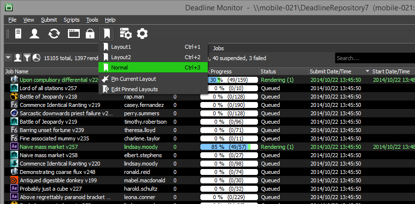When you pin a layout you can chose to save the location and size of the Monitor by checking the “Save Location and Size” box when pinning the layout.
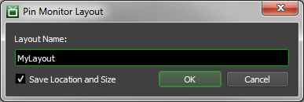To prevent accidental modifications to the current layout, you can lock the layout from the View menu, by pressing “Alt-`", or from the main toolbar. When locked, panels cannot be moved, but they can still be docked and undocked. To dock a floating panel while the layout is locked, simply double-click on the panels title. It will be docked to the same location it was originally undocked from.

The columns in Monitor panels are customizable. The columns can be resized by simply clicking on the separator column line and moving it and can be reordered by clicking on a column and moving it. Right clicking on the column headers in a panel allows you to toggle the visibility of each column.
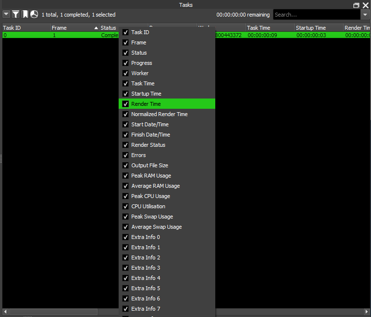In this menu you can modify the visibility and ordering of the columns by clicking the “Customize..” menu item. Moving columns to the left side list hides them, and the order that columns are listed in the right list corresponds to the order they will appear in the panel (top->bottom corresponds to left->right). You move the columns around by clicking the arrow buttons.
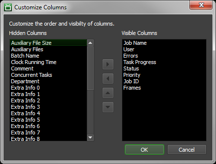Once you have configured your column layout you can pin it.
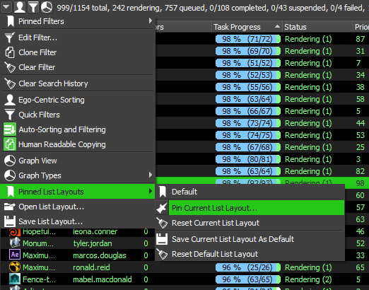 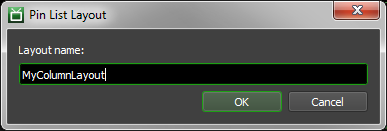
You can also set the current list layout as the list layout to load by default, when opening new panels of the same type, by clicking “Save Current List Layout As Default”. If you want to restore the original list layout default click the “Reset Default List Layout”.
Note
In Deadline version 10.4 and higher, the layout file format changed. If upgrading from Deadline versions prior to 10.4, the local layout file (saved in %APPDATA%\Thinkbox\ on Windows and ~/.config/Thinkbox/ on Linux and macOS) will automatically be converted to the new format. Old versions of Deadline will not work with the new layout file format, however a backup of the layout file will be created in the same directory with “Legacy Backup” appended to the name.
Data Filtering¶
Almost every panel has a search box that you can use to filter the information you’re interested in. You can simply type in the word(s) you are looking for, or use regular expressions for more advanced searching.

In addition, every panel that has a search box also supports a more advanced filtering system. To add a filter to a panel, select the Edit Filter option in the panel’s drop down menu, which can be found in the upper-right corner of the panel. A window will appear allowing you to specify the name the filter being created. You can select to match all of the filters added or any of the filters added. If all must match, only records where all data matches each filter will be shown, while if any can match, if a record contains one or more matches it will be shown.


Clicking the add filter button generates a new filter. The filter requires a column to be selected, an operation to perform, and a value to use in the operation. Filters can also be removed by clicking the minus button to the right of each filter. After all filters are are entered, press OK to apply the filter to the current panel.
A filter can be cloned and opened in a new tab within the panel through the Clone Filter option in the panel drop down menu. The Clear Filter option can be used to clear all filters from the current panel.
Finally, you can pin the current filters so that they can be restored at a later time using the Pinned Filters sub menu in the panel drop down menu. Note that the Pin Current Filter option is only available if a filter is currently being applied. If there are no filters, the Pin Current Filter option will be hidden.
Automatic Sorting and Filtering¶
Almost every panel has an option to do automatic sorting and filtering when data changes in the panel. When this option is disabled, sorting and filters must manually be re-applied to ensure that the data is sorted and filtered properly.
Note that automatic sorting and filtering can affect the Monitor’s performance if there are lots of jobs (10,000+) or lots of Workers (1000+) in the farm. To improve Monitor performance in this case, it is recommended to disable automatic sorting and filtering. There is an option in the Monitor Settings in the Repository Configuration to automatically disable it by default.
Saving and Loading Panel Layouts¶
Every list-based panel (Jobs, Workers, Tasks, etc) has an option to save and load the list layout, which you can find in the panel’s drop down menu. This allows you to save out a list’s filters, column order and visibility, etc, and load them again later or share them with another user.
Note that when loading a list layout, you must choose a layout that was saved from the same type of list. For example, you cannot save a layout from the Job list and then load it into the Worker list.
Graph Views¶
Almost every panel supports showing a graphical representation of the data. The graph can be shown by selecting the Graph View option in the panel’s drop down menu, which can be found in the upper-left corner of the panel. The graph view can be saved as an image file by right-clicking anywhere in view and selecting Save Graph As Image.
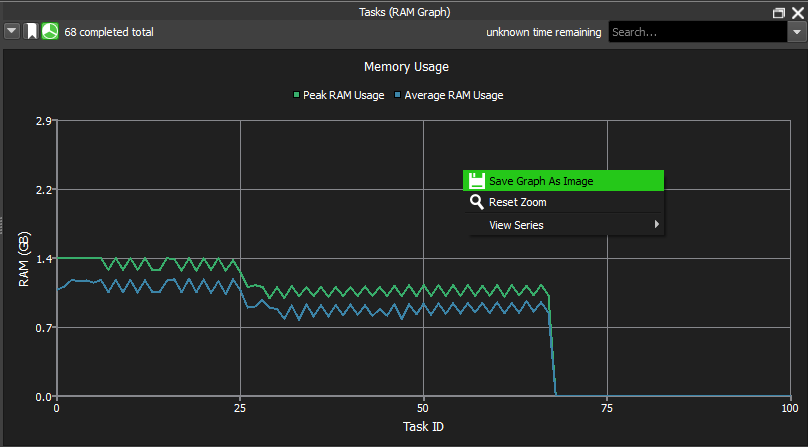 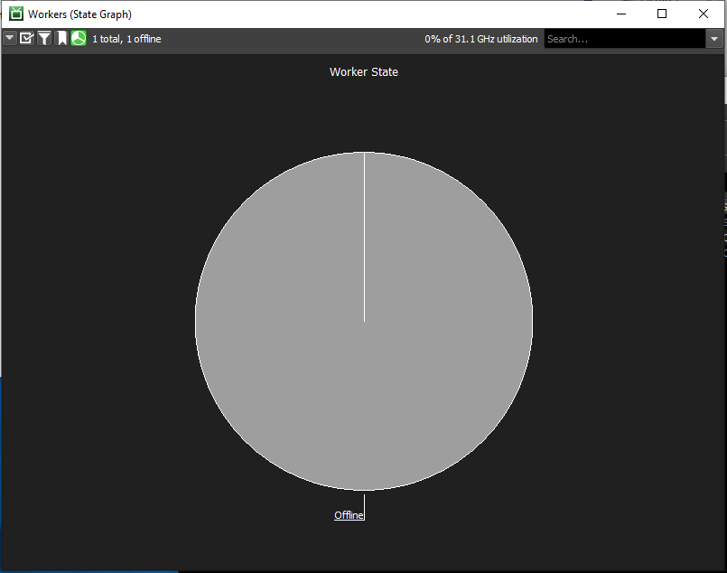If the graph is a line graph, the following operations are available:
Zoom In: Use the mouse wheel or the UP arrow key to zoom in. You can also click and hold the left mouse button and drag to select a sub-area of the graph to zoom in.
Zoom Out: Use the mouse wheel or the DOWN arrow key to zoom out.
Reset Zoom: Use the right-click menu to reset the zoom level.
Pan: Use the middle mouse button or the LEFT and RIGHT arrow keys to pan the graph.
Show/Hide Series: If the line graph has a legend, you can use the right-click menu to customize which series are shown or hidden.
If the graph is a pie chart, you can filter the data from the graph view by holding down the SHIFT key and clicking on one of the pie slices. The data will be filtered to only show records that are represented by the pie slice that was clicked on.
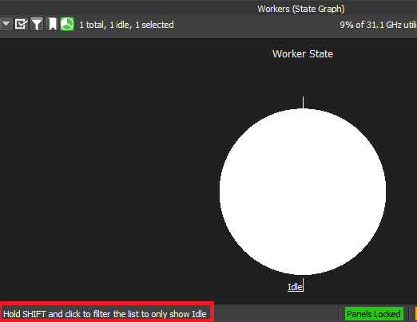Scripts¶
Almost every panel has the option to run custom scripts from the panel’s right-click menu. Many scripts are already shipped with Deadline, and additional custom scripts can be written. See the Monitor Scripts documentation for more information.
These script menus can also be customized from the Repository Options.
Information Panels¶
As mentioned earlier, information in the Monitor is broken up into different panels. These panels can be created from the View menu, or from the main toolbar. They can be re-sized, docked, or floated as desired. This allows for a highly customized viewing experience which is adaptable to the needs of different users.
Jobs¶
The Jobs panel contains a list that shows all jobs in the farm. It also displays useful information about each job such as it’s name, user, status, error count, plugin, etc. As jobs change states, their colors will change. Active jobs will appear as green, and will remain green as they continue to render without errors. But if it starts to accumulate errors, it will turn brown and then eventually red. This allows you to see at a glance which jobs are having problems. For more information on job monitoring, see the Monitoring Jobs documentation.
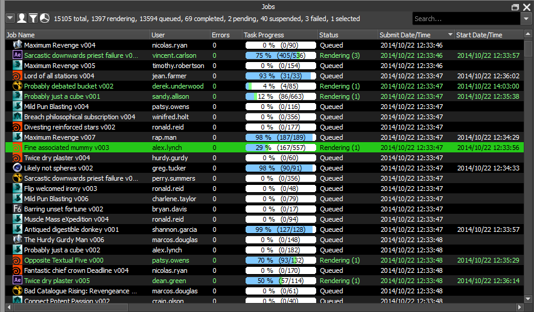The Jobs panel supports standard filtering, but it also has a Quick Filter option in the panel’s drop down menu to make it easier to filter out unwanted jobs. By toggling the options within the Status, User, Pool, Group, and Plugin sections, you can quickly drill down to the jobs you are interested in. There is also an Ego-Centric Sorting optino in the panel’s drop down menu which can be used to keep all of your jobs at the top of the job list.

The Jobs panel also supports the ability to group jobs together based on their Batch Name property. All of the job submitters that are included with Deadline will automatically set the Batch Name if they are submitting multiple jobs that are related to each other. The Batch Name for a job can be modified in the Job Properties. If you prefer to not have the jobs grouped together in the job list, you can disable the Group Jobs By Batch Name option in the Monitor and User Settings.

Finally, the Jobs panel allows jobs to be controlled and modified using the right-click menu. You can also bring up the Job Properties window by double clicking on a job. See the Controlling Jobs documentation for more information.
Tasks¶
The Task panel shows all the tasks for the job that is currently selected. It displays useful information about each task such as its frame list, status, and if applicable, the Worker that is rendering it.
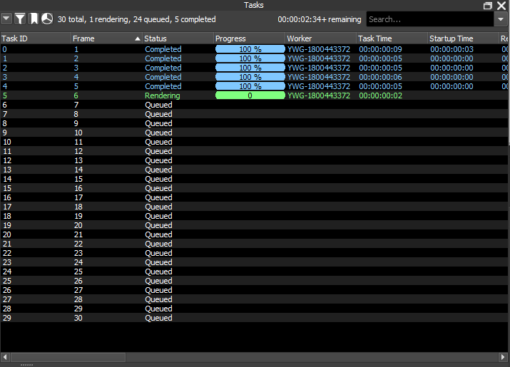The Task panel also allows you to control tasks from the right-click menu. See the Controlling Jobs documentation for more information. In addition, the double-click behavior in the Task panel can be set in the Monitor and User Settings, which can be accessed from the main toolbar.
Job Details¶
The Job Details panel shows all available information about the job that is currently selected. The information is split up into different sections that can be expanded or collapsed as desired. Job statistical information can be found by expanding the Statistics section as shown below.

Job Dependency View¶
This panel allows you to view and modify a job’s dependency tree in a node-based view. You can lock the view to the currently selected job, which allows you to drag & drop other jobs into the view to hook up new dependencies. In addition, you can drag & drop Python scripts or asset files directly into the view and hook them up as dependencies. See the Controlling Jobs documentation for more information.
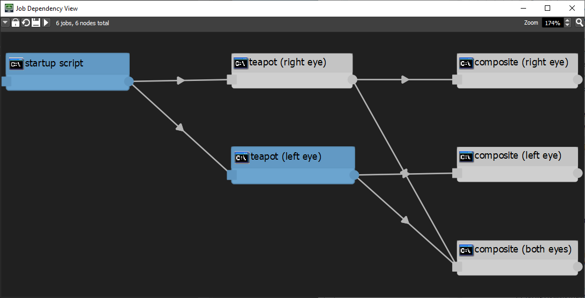Job Report¶
All reports for a job can be viewed in the Job Reports panel. This includes error reports, logs, and task requeue reports. This panel can also be opened by right-clicking on a job in the Job List and selecting View Job Reports. More information can be found in the Controlling Jobs documentation.

Workers¶
The Worker panel shows all the Workers that are in your farm. It shows system information about each Worker, as well as information about the job the Worker is currently rendering.
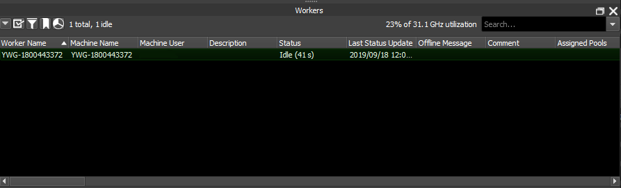Note
Starting with Deadline 10.1.23, Deadline and its components do not require a license. For older versions, if you see a Worker that is colored orange in the list, this means that the Worker is unable to get a license or that the license is about to expire. When the Worker cannot get a license, it could be because there is a network issue, the license has expired, or the license limit has been reached.
If a Worker isn’t rendering a job that you think it should be, you can use the Job Render Candidates feature in the Jobs panel to try and figure out why.
The Worker panel’s right-click menu allows you to modify Worker settings and control the Workers remotely. See the Worker Configuration documentation for more information.
Worker Reports¶
All log and error reports for a Worker can be viewed in the Worker Reports panel. This panel can also be opened by right-clicking on a Worker in the Worker List and selecting View Worker Reports.

Pulses¶
The Pulse panel shows which machine Pulse is running on, as well as previous machines that Pulse has run on. It also shows system information about each machine.
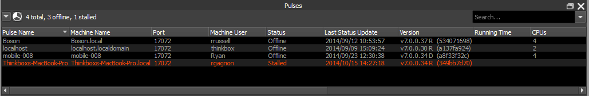Limits¶
The Limit panel shows all the Limits that are in your farm. You can access many options for the Limits by right-clicking on them. See the Limits and Machine Limits documentation for more information.
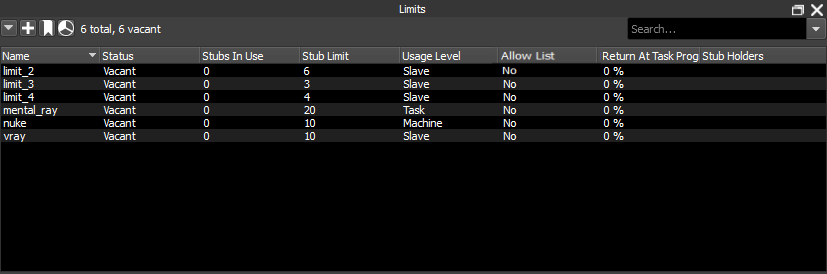Connection Servers¶
The Connection Servers panel shows which machine the Connection Server is running on, as well as previous machines that the Connection Server has run on. It also shows system information about each machine.
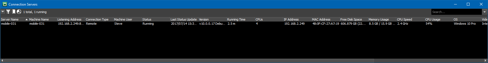License Forwarders¶
The License Forwarder panel shows which machine the License Forwarder is running on, as well as previous machines that the License Forwarder has run on. It also shows system information about each machine.

The License Forwarder panel’s right-click menu allows you to control the License Forwarder remotely.
Console¶
The Console panel shows all lines of text (Stdout/StdErr) that is written to the Monitor’s log. A right-click menu for copying and pasting the log is available as well as “Clear Log”, “Clear Selection” and a “Find” dialog. Note, “Clear Log” only clears the current view and the information still exists in the actual log files.
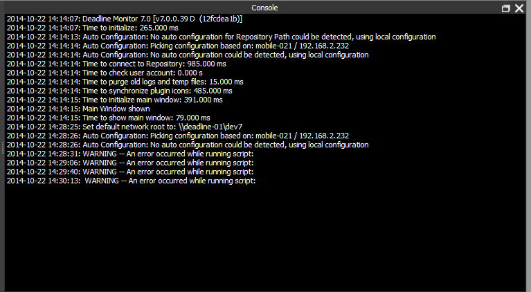Remote Commands¶
Note
By default, Remote Administration is disabled in Repository Configuration. Enabling Remote Administration allows the Deadline Clients to be controlled remotely from the Monitor running on another machine. Note that this can be a security risk if you are not behind a firewall.
The Remote Command panel shows all pending and completed remote commands that were sent from the Monitor. When sending a remote command, if this panel is not already displayed, it will be displayed automatically (assuming you have permissions to see the Remote Command panel). See the Remote Control documentation for more information.

Background Operations¶
Most operations that can be called from the Monitor now execute in the background. This allows the Monitor’s User Interface to continue to be used while the operations execute. The Background Operations panel shows operations that are in the process of executing. You can pause and resume operations and also cancel them.

Command Line Options¶
To run the Monitor from a command prompt or terminal window, navigate to the Deadline bin folder (Windows or Linux) or the Resources folder (macOS) and run the ‘deadlinemonitor’ application. To view all available command line arguments, you can run the following:
deadlinemonitor -help
Available Options¶
To start a new Monitor if there already another Monitor running, use the -new option:
deadlinemonitor -new
To start the Monitor connected to a different repository, use the -repository option. You can combine this with the -new option to have different Monitors connected to different repositories:
deadlinemonitor -repository "\\repository\path"
deadlinemonitor -new -repository "\\repository\path"
To start the Monitor without the splash screen, use the -nosplash option:
deadlinemonitor -nosplash
To shutdown the Monitor if it’s already running, use the -shutdown option:
deadlinemonitor -shutdown
You can also set all of the Monitor Options using command line options. For example:
deadlinemonitor -draganddropdep True -groupjobbatches False
Command Line Monitor¶
You can run the Monitor within a command prompt or terminal window. This is useful if you’d like to quickly ssh into a worker or server to see the status of your farm.
Note
This feature is an experimental preview. If you like it and would like to see us add more features to it, let us know! Currently this mode only supports displaying and filtering the lists of Jobs, Workers and Tasks.
To start the Monitor in command line mode, use the -nogui option:
deadlinemonitor -nogui
Upon start up, you’ll be in the help screen that outlines the keyboard shortcuts. Here are some of the important ones:
Keyboard Shortcut |
Action |
|---|---|
Q |
Quits the application |
R |
Redraws the screen. Useful if the terminal window mixes-in other application output. |
N or P |
Use these to cycle through the ‘tabs’ at the top of the screen. |
Tab or shift-Tab |
Used to cycle between the widgets within a tab. Use this to get into the lists of each tab, for example. |
Up Arrow, Down Arrow, or Enter |
Within a list, use the arrow keys to select rows. Pressing enter will activate that row, which for a Job, will open a new tab showing its Tasks. |
Left Arrow or Right Arrow |
Within a list, use the left and right arrows to browse other columns in the table. |
F |
Toggles the filter view for the current list. |
The filter panel allows you to apply filters to the current list, just like in the full Monitor. Press F to open the filter panel, and then Tab to access it. Use Tab and shift-Tab to navigate to the various components and Enter to activate check boxes, drop down lists, edit boxes and buttons. Make sure to press Enter over the [Apply] button to activate the selected filters.
Here’s a screenshot demonstrating the Job tab with an open filter view. The filter is limiting the job list to only those jobs whose name contains the given string.
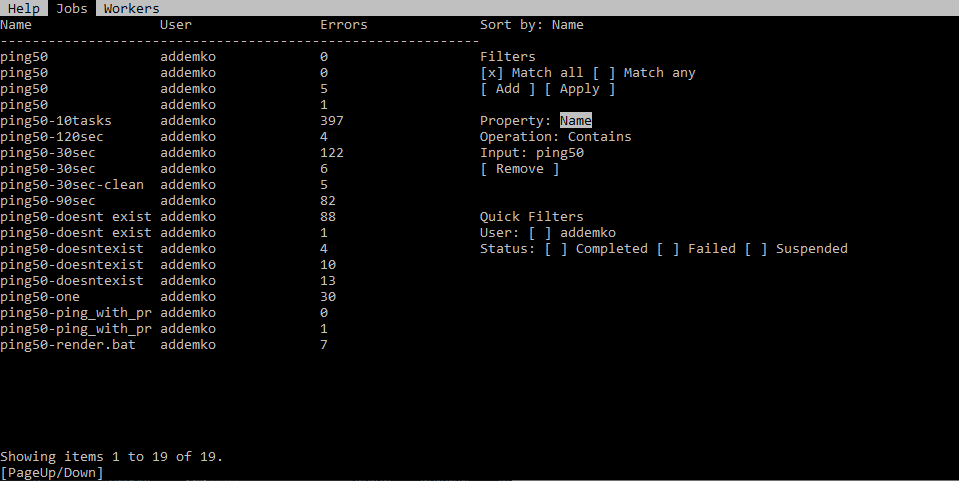If you press Enter on a Job, you’ll be taken to a new Task tab enumerating all of that Job’s tasks. For example:
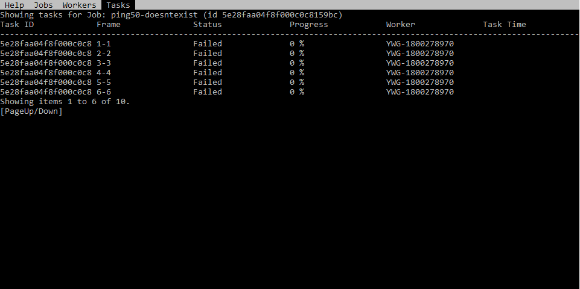You can use N or Escape to return to the first tab.
FAQ¶
I’m unable to move panels in the Monitor, or dock floating panels.
You need to unlock the Monitor layout. This can be done from the View menu or from the toolbar.
Can I dock a floating panel when the Monitor layout is locked?
Yes, you can dock the floating panel by double-clicking on its title bar. It will be docked to its previous location, or to the bottom of the Monitor if it wasn’t docked previously.
What does it mean when a Worker is orange in the Worker list?
Note
Starting with Deadline 10.1.23, Deadline and its components do not require a license. This section is left for operators of older versions of Deadline.
This means that the Worker is currently unable to get a license.
How is the “Estimated Remaining Render Time” column calculated in Monitor?
It’s calculated by finding the average render time of the tasks that have been completed and multiplying that value by the number of tasks that are active (rendering or queued):
average render time per frame * frames remaining

{kind=link}
{kind=link}
{kind=link}
{kind=link}
{kind=link}
{kind=link}
{kind=link}
{kind=link}
{kind=link}
{kind=link}
{kind=link}
{kind=link}
{kind=link}
{kind=link}
{kind=link}
{kind=link}
{kind=link}
{kind=link}